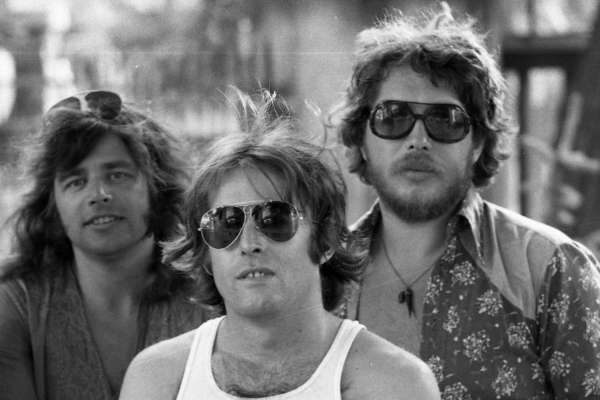

Laux József

Az Omega alapítoja, és 1976-ig dobosa is.
- 1943 május 8.án született
- Szülei Laux József és Luzsénszky Geraldine
- 1960-ban a Benkó Dixieland Band tagja lett korengedménnyel.
- 1962-ben alapító tagja volt az Omegának. Itt egyetlen szerzemény fűződik nevéhez, a Kérgeskezű favágók című instrumentális dal.
- 1971-ben Presser Gáborral kiváltak és megalakították a Locomotiv GT-t.
- 1976-ig volt az Omega dobosa.
- 1985-ben miután kiköltözött Los Angelesbe, az Adamis Annától való válása után, azután látogatott vissza Magyarországra.
- 1990-ben haza is költözött Magyarországra.
- Zenekara a Laux Trio. JLX Kiadó néven könyv- és lemezkiadót alapított. Dolgozott együtt az Average White Banddel, Bryan Adamsszel, Boz Scaggs-zel, Dionne Warwickkal, Tanya Tuckerrel és Frank Zappával is.
- 2008-ban előadóművészként és a JLX Kiadó ügyvezető igazgatójaként megkapta A Magyar Köztársasági Érdemrend lovagkeresztje kitüntetést.
- 2016 augusztus 6.-án halt meg szívbetegségben.